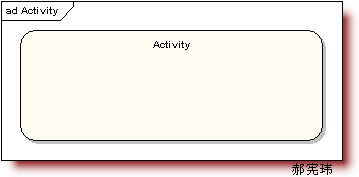
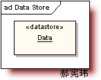
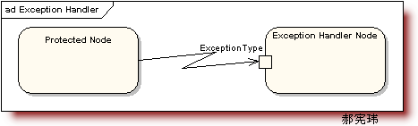
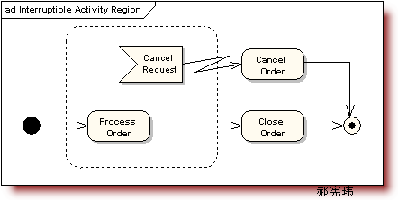

内容路线
{kind=link}
•活动图概述
活动图概述
•活动图和交互图是UML中对系统动态方面建模的两种主要形式
•交互图强调的是对象到对象的控制流，而活动图则强调的是从活动到活动的控制流
•活动图是一种表述过程基理、业务过程以及工作流的技术。它可以用来对业务过程、工作流建模，也可以对用例实现甚至是程序实现来建模
•UML 2.0而言，去除了“活动图是状态图的一种特例”这一规定
•如何阅读活动图
阅读简单活动图
{kind=link}
活动图的主要元素
•初始节点和活动终点：用一个实心圆表示初始节点，用一个圆圈内加一个实心圆来表示活动终点
•活动节点：是活动图中最主要的元素之一，它用来表示一个活动
{kind=link}
•转换：当一个活动结束时，控制流就会马上传递给下一个活动节点，在活动图中称之为“转换”，用一条带箭头的直线来表示
活动图的主要元素
•分支与监护条件：分支是用菱形表示的，它有一个进入转换（箭头从外指向分支符号），一个或多个离开转换（箭头从分支符号指向外）。而每个离开转换上都会有一个监护条件，用来表示满足什么条件的时候执行该转换。
{kind=link}
•分岔与汇合：
{kind=link}
修改后的简单活动图
{kind=link}
带泳道的活动图
{kind=link}
带对象流的活动图
9、对象流（Object Flows）
对象流是动作状态或者活动状态与对象之间的依赖关系，表示动作使用对象或动作对对象的影响。用活动图描述某个对象时，可以把涉及到的对象放置在活动图中并用一个依赖将其连接到进行创建、修改和撤销的动作状态或者活动状态上，对象的这种使用方法就构成了对象流。
对象流中的对象有以下特点：
(1)、一个对象可以由多个动作操作。
(2)、一个动作输出的对象可以作为另一个动作输入的对象。
(3)、在活动图中，同一个对象可以多次出现，它的每一次出现表面该对象正处于对象生存期的不同时间点。
对象流用带有箭头的虚线表示。如果箭头是从动作状态出发指向对象，则表示动作对对象施加了一定的影响。施加的影响包括创建、修改和撤销等。如果箭头从对象指向动作状态，则表示该动作使用对象流所指向的对象。

复杂活动图
•辅助活动图：
1、活动状态图（Activity）
活动状态用于表达状态机中的非原子的运行，其特点如下：
(1)、活动状态可以分解成其他子活动或者动作状态。
(2)、活动状态的内部活动可以用另一个活动图来表示。
(3)、和动作状态不同，活动状态可以有入口动作和出口动作，也可以有内部转移。
(4)、动作状态是活动状态的一个特例，如果某个活动状态只包括一个动作，那么它就是一个动作状态。
UML中活动状态和动作状态的图标相同，但是活动状态可以在图标中给出入口动作和出口动作等信息。

{kind=link}
•汇合描述：当汇合的所有入流均到点汇合点时，就将执行汇合点指向的活动节点。但是有些时候，你希望对其做一些约束，这时就可以借助汇合描述来完成。汇合描述实际上是一个约束，其格式就是“{约束条件}”。
•发送信号与接收信号：
{kind=link}
{kind=link}
8、数据存储对象（DataStore）

12、异常处理（Exception Handler）
当受保护的活动发生异常时，触发异常处理节点。

13、活动中断区域（Interruptible Activity Region）
活动中断区域围绕一些可被中断的动作状态图。比如下图，正常情况下【Process Order】顺序流转到【Close Order】，订单处理流程完毕；但在【Process Order】过称中，会发送【Cancel Order】请求，这时会流转到【Cancel Order】，从而订单处理流程结束

•如何绘制活动图
绘制活动图
•“活动图” 比较直观易懂；与传统的流程图十分的相近，只要能够读懂活动图，就不难画出活动图
•绘制时首先决定是否采用泳道：主要根据活动图中是否要体现出活动的不同实施者
•然后尽量使用分支、分岔和汇合等基本的建模元素来描述活动控制流程
•如果需要，加入对象流以及对象的状态变化，利用一些高级的建模元素（如辅助活动图、汇合描述、发送信号与接收信号、引脚、扩展区）来表示更多的信息
•活动图的建模关键是表示出控制流，其它的建模元素都是围绕这一宗旨所进行的补充
工作流程，控制流程，业务流程中使用。
•活动图应用说明
活动图应用说明
•对工作流建模：用于业务建模的时候，每一条泳道表示一个职责单位，该图能够有效地体现出所有职责单位之间的工作职责，业务范围及之间的交互关系、信息流程
建模时应遵循以下策略：
•为工作流建立一个焦点，除非你所涉及的系统很小，否则不可能在一张图中显示出系统中所有的控制流
•选择对全部工作流中的一部分有高层职责的业务对象，并为每个重要的业务对象创建一条泳道
•识别工作流初始节点的前置条件和活动终点的后置条件，这可有效地实现对工作流的边界进行建模。
•从该工作流的初始节点开始，说明随时间发生的动作和活动，并在活动图中把它们表示成活动节点
•将复杂的活动或多次出现的活动集合归到一个活动节点，并通过辅助活动图或子活动图来表示它们
•找出连接这些活动节点的转换，首先从工作流的顺序开始，然后考虑分支，接着再考虑分岔和汇合
•如果工作流中涉及重要的对象，则也可以将它们加入到活动图中
•若工作流中有多次启用的，则可采用展开区表示
•对操作建模：每一个对象占据一个泳道，而活动则是该对象的成员方法
•建模时应遵循以下策略：
-- 收集操作所涉及的抽象概念，包括操作的参数、返回类型、所属类的属性以及某些邻近的类
-- 识别该操作的初始节点的前置条件和活动终点的后置条件。也要识别在操作执行过程中必须保持的信息
-- 从该操作的初始节点开始，说明随着时间发生的活动，并在活动图中将它们表示为活动节点
-- 如果需要，使用分支来说明条件语句及循环语句
-- 仅当这个操作属于一个主动类时，才在必要时用分岔和汇合来说明并行的控制流程
•本章小结
•首先介绍了“活动图”的历史变迁；逐一介绍简单活动图、带泳道的活动图、带对象流的活动图的阅读方法
•讲解了活动节点、初始节点和活动终点、转换、 分支与监护条件、分岔与汇合等基本建模元素；逐步引出了泳道、对象流等控制流逻辑
•介绍了辅助活动图、汇合描述、发送信号与接收信号、引脚和扩展区的概念
•最后，概括地说明了活动图的绘制要点，并结合对工作流建模和对操作建模之间的异同
内容出自：面向对象设计PPT